Helping users stay engaged with learning
Designing a notification experience for the MIMS mobile app that helps healthcare professionals discover relevant content and follow through on learning activities.
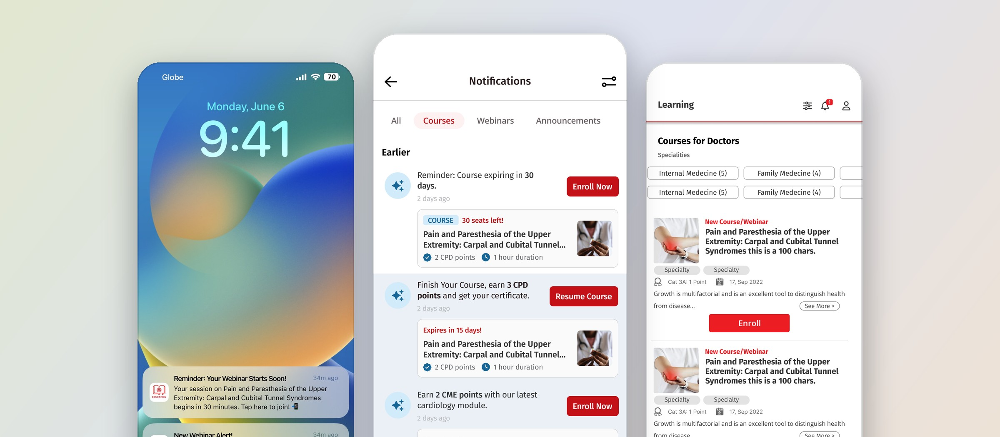
- Project
- Notification system
- Product
- MIMS Education app
- Team
- UX Design Team
- Presented
- January 2025
- Scope
- Notification strategy, user flows, high-fidelity UI
Overview
What brings a learner back after they sign up?
I designed a notification system proposal to increase engagement with the app’s learning content. The experience connected push notifications with an in-app notification center, giving users a clear path back to webinars, courses, and unfinished activities.
Following the introduction of the notification system, we observed a substantial increase in user engagement.
The challenge
Signing up is only the first step of learning.
Registering for a webinar or enrolling in a course is only the beginning of a learning journey. Users may register weeks before an event, leave a quiz unfinished, or miss the deadline to complete a course.
The design challenge was to help users stay aware of these opportunities and understand what to do next.
My approach
Four types of notification for four moments.
I organized the proposal around moments when a notification could help users take a meaningful action.
-
Type A · Webinar reminders
Remember an upcoming webinar
Reminders brought registered webinars back to users’ attention closer to the event, including when they had signed up well in advance.
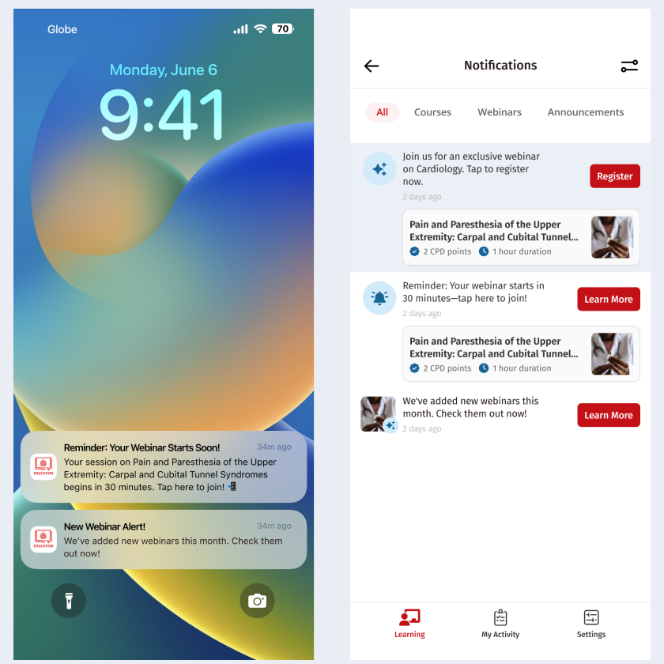
-
Type B · Incomplete actions
Continue unfinished learning
Notifications highlighted incomplete quizzes and courses nearing expiration. Clear actions helped users resume a course or find guidance on accessing quizzes and downloading CME/CPD certificates.
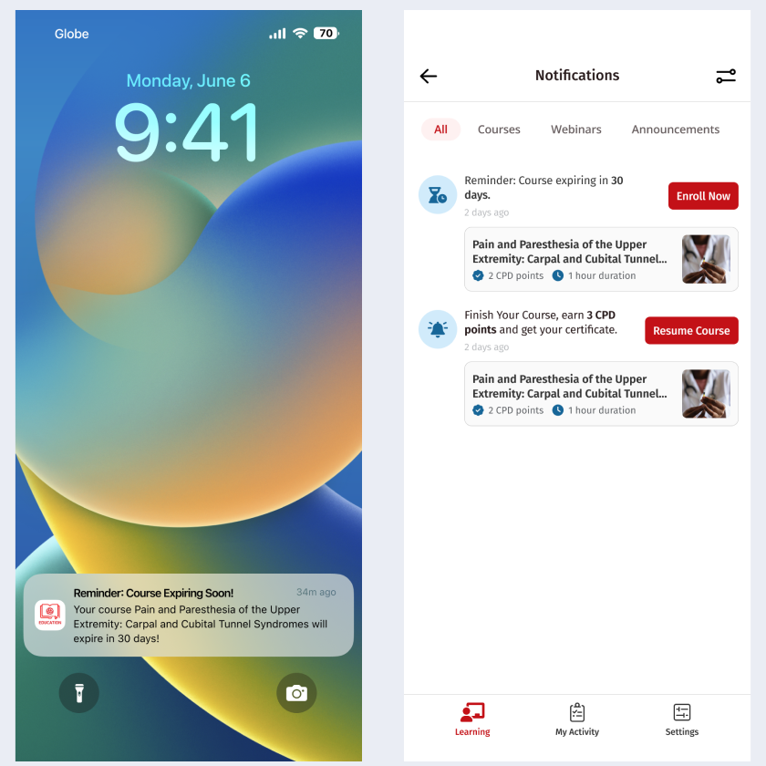
-
Type C · New content and recommendations
Discover relevant content
New content alerts introduced webinars and courses, with proposed recommendations based on specialty and location. The proposal also explored recommendations related to previous enrollments and popular courses within a user’s specialty.
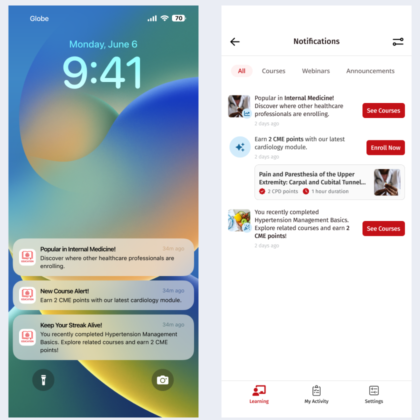
-
Type D · Announcements
Stay informed about the app
A separate notification category covered feature updates and promotional announcements.
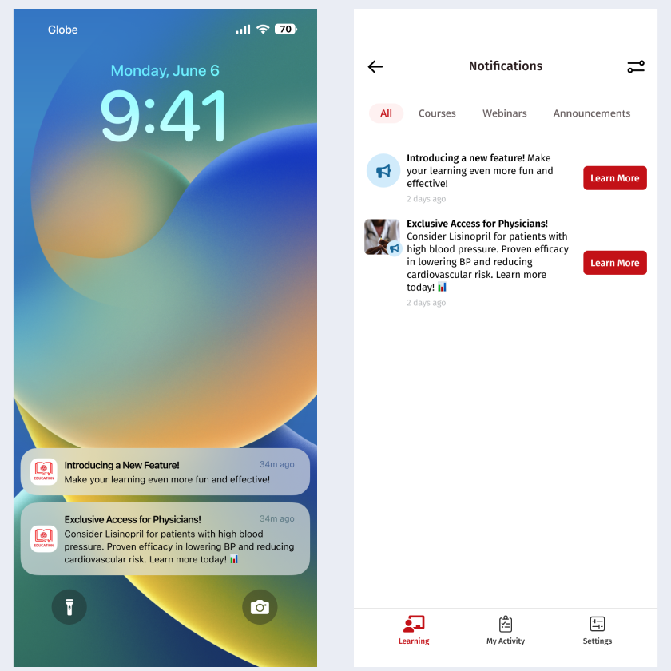
The system
One reminder, three ways back in.
The experience included entry points both outside and inside the app: push notifications, an app icon badge, and a notification bell in the Learning tab.
An in-app notification center gave users a place to revisit updates, so a missed push was never a lost reminder.
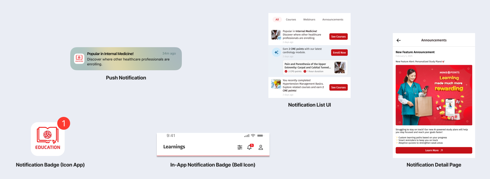
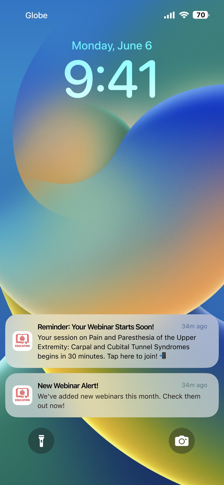
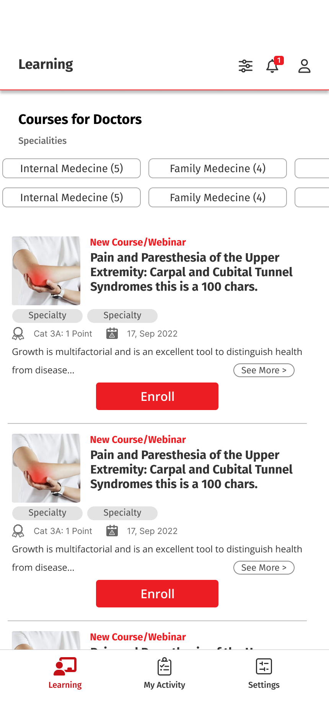
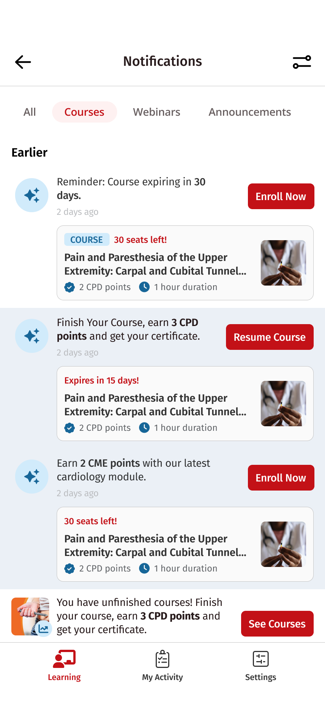
Scanning
Easy to scan, clear about what to do.
The high-fidelity designs used category tabs to organize updates, concise messages to communicate their purpose, and visible actions such as “Register,” “Resume Course,” and “See Courses.”
These decisions aimed to help users quickly distinguish a reminder about something they had already started from an invitation to explore something new.
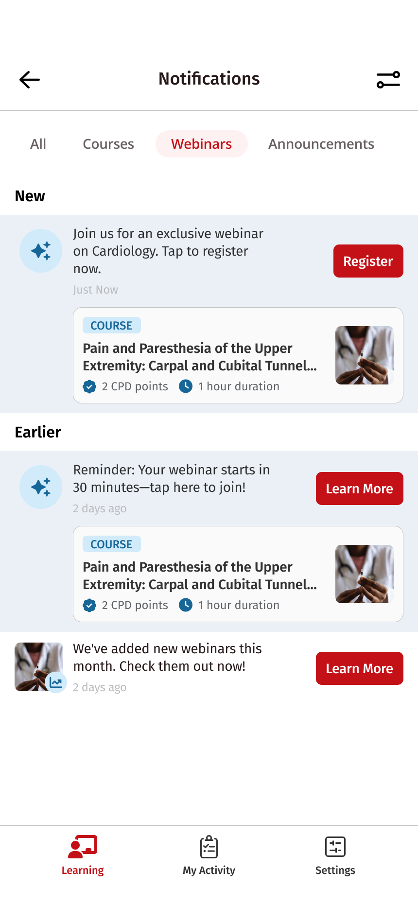
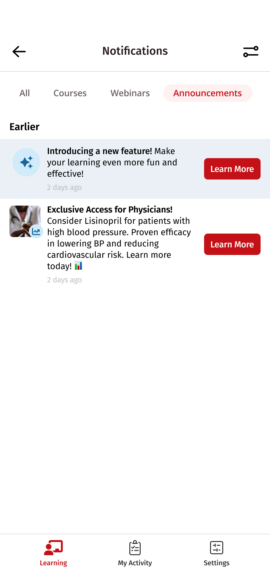
Destinations
Every notification lands somewhere useful.
The proposed flows connected notifications to relevant destinations, including course overviews, filtered content lists, My Activity, and notification details.
This made the destination part of the design. Each notification needed to explain why it mattered and lead users toward the action it suggested.
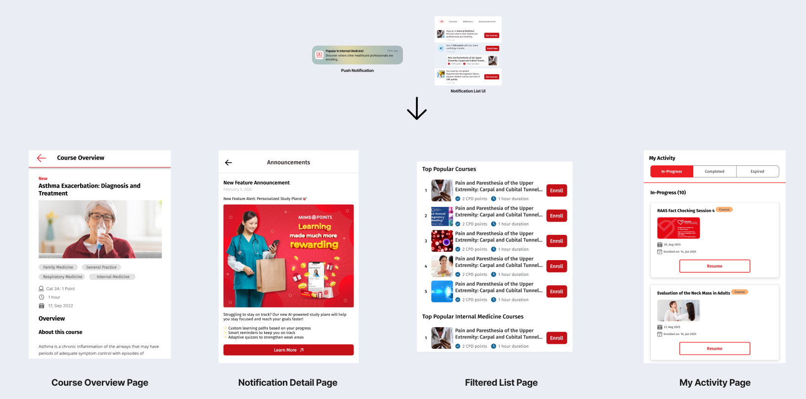
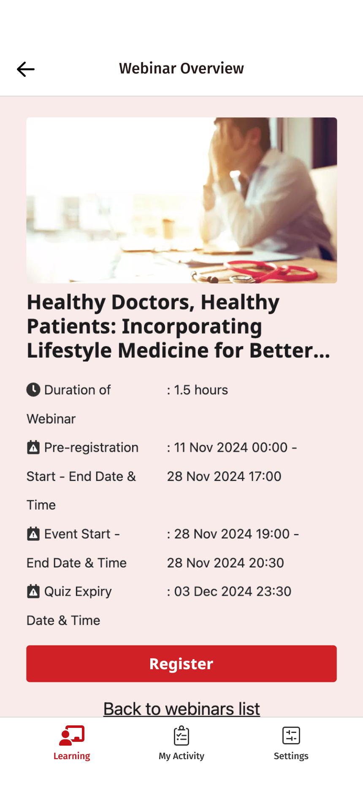
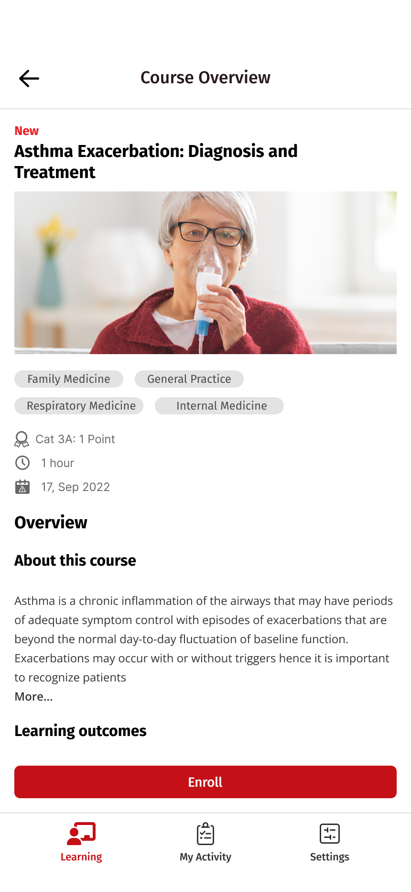
Next steps
Closing the loop with the team.
I presented the concept to the team in three parts: the concept itself, a prototype demo, and a conversation about next steps.
I ended with two questions. Does this approach align with your vision and priorities for the MIMS mobile app? And which key factors should we prioritize as we move forward with the notification feature?
Outcome
More people came back.
After the notification system was introduced, we saw a substantial increase in user engagement.
The project reinforced the importance of designing the full journey around a notification: identifying a relevant moment, communicating a clear reason to return, and helping the user take the next step.
Let’s talk
I’d love to tell you more on a call.
There’s more to this project than fits on one page. If you’re interested, I’m happy to walk you through the decisions, the trade-offs and what I’d do next.